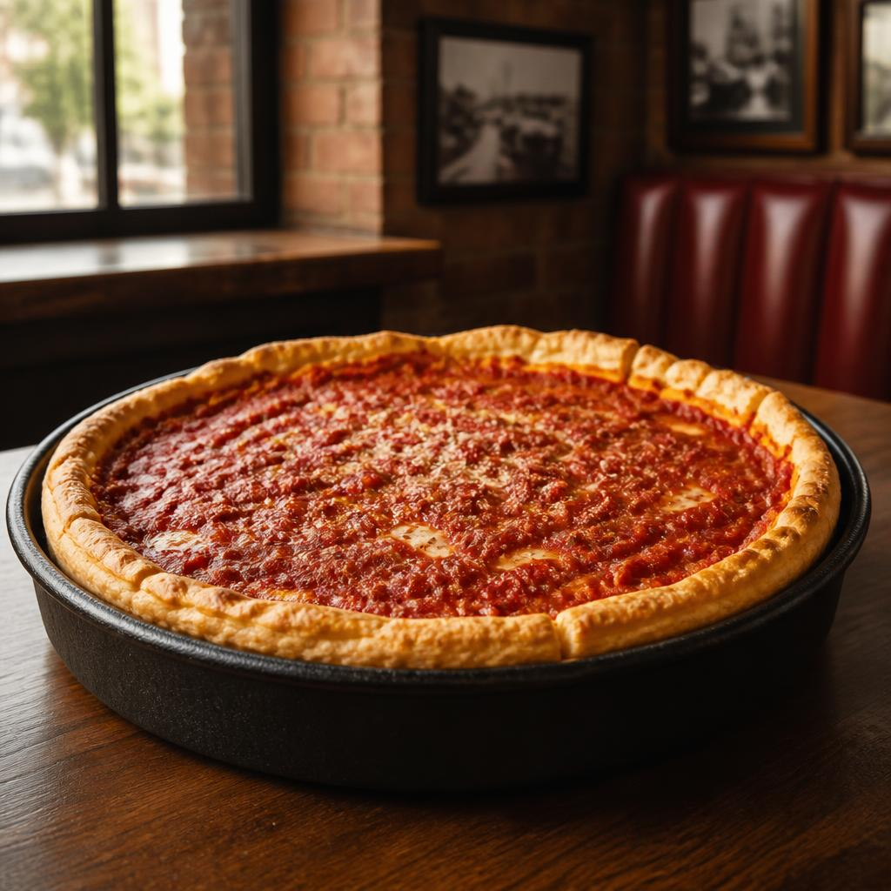

01 / QUICK FACTS
- NICKNAMEThe Windy City
- POPULATION2,731,585
- STATEHOODIllinois, 1818
Population: 2025 U.S. Census Bureau estimate
A LOCAL INTRODUCTION · ILLINOIS
A big-hearted city with a shoreline for a front porch, a neighborhood for every mood, and a pizza worth sitting down for.
MEET THE CITYTHE SHORT VERSION
Start with the essentials, then let the city lead you somewhere unexpected. That’s usually how the best Chicago days go.
Population: 2025 U.S. Census Bureau estimate

A VERY GOOD PLACE TO START02 / TAKE A BITE
The first date is
deep dish.
Chicago deep-dish pizza is less a quick bite and more a proper occasion: a buttery high edge, a generous middle, and tomato sauce that gets the last word. Bring an appetite—and someone to share the wait with.
THE OTHER SIDE OF THE MENU
Lake Michigan gives Chicago its breathing room. Walk the path, catch the breeze, and let the skyline do its thing behind you.
SHORELINE STATE OF MIND03 / LOOK UP
Northern Cardinal
That bright flash in a winter tree? It might be Illinois’s state bird, making even a gray day feel a little more local.
GIVE THE CARDINAL A TAP
YOUR CHICAGO, YOUR WAY
Keep a little list of what catches your eye. This one stays right here in this visit.
Just for this visit. Nothing is saved after you leave.
04 / CITY HALL
MAYOR OF CHICAGO
Brandon Johnson